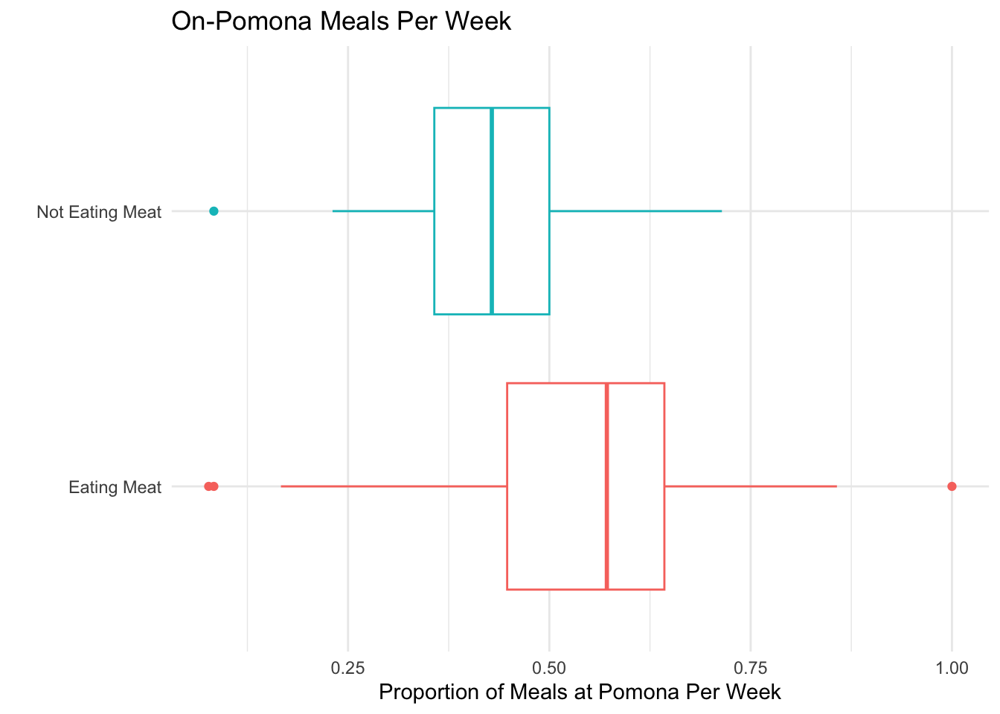
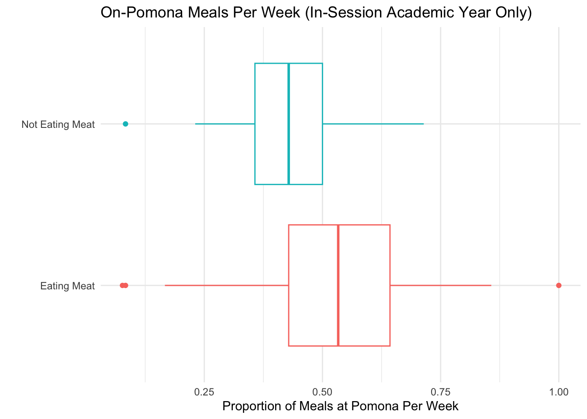
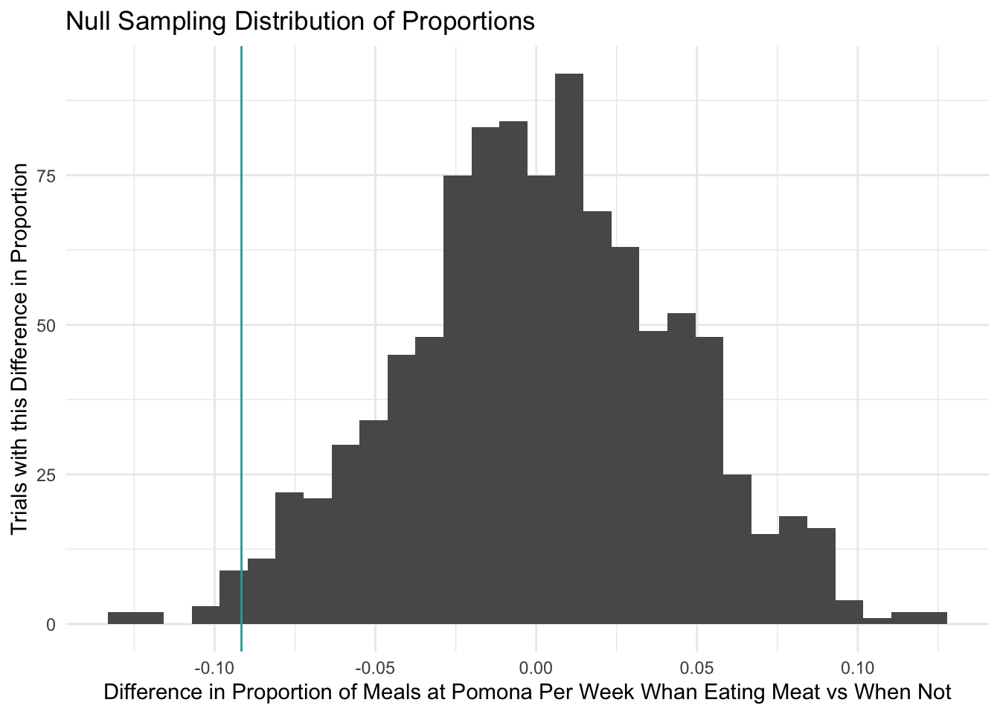

In a philosophy class at Claremont McKenna my sophomore fall, I read an argument for being vegetarian. My professor told the class that every year, students read this article, and every year, students would be vegetarian for about a day before giving up. Since I was already refusing to go to Collins due to how badly they messed up a quesadilla my freshman year, in order to further protest CMC and their misguided beliefs about what students find acceptable to eat, I decided to stop eating meat for the rest of the academic year to prove him wrong. (Jokes of course, it was a great class)
As someone who had been eating meat my whole life, this was actually a lot easier than I anticipated. However, I did notice that my meals took more planning, as I found it difficult to get enough nutrition if I ate a lot of my meals on campus at Pomona. Thus, I am interested in if there is a noticeable difference between the amount of times I had meals on Pomona when I was eating meat vs when I was not. To do this, for every week I was on campus, I am going to calculate the proportion of meals I ate at Pomona. Then, I will compare the average difference in the proportions from when I was eating meat vs when I was not.
This aims to answer the question of if I personally tend to eat at Pomona less frequently when I have a dietary restriction of not eating meat.
I am using my own data that I have been collecting since I started college. I am limiting the data to my first two years at the 5Cs.
Data
This plot shows the proportion of times I had a meal at Pomona each week I was on campus starting August 2024 and ending May 2026.
R Code
library(tidyverse)unclean_dh_data <-read.csv("first_4_sem_dininghall_data.csv")semi_clean_dh <- unclean_dh_data |>mutate(week_of =floor_date(mdy(date), unit ="week")) |>group_by(week_of) |>summarize(on_camp =sum(place %in%c("Frank", "Frary", "Oldenborg", "Coop Fountain")), on_camp_prop = on_camp/n()) |>mutate(pesc =if_else(week_of >=mdy("09/13/2025"), "Not Eating Meat", "Eating Meat"))ggplot(semi_clean_dh, aes(x = on_camp_prop, y = pesc, color = pesc)) +geom_boxplot() +labs(title ="On-Pomona Meals Per Week", x ="Proportion of Meals at Pomona Per Week", y ="") +theme_minimal() +theme(legend.position ="none")

This does suggest that when I was not eating meat, I would eat at Pomona less frequently than when I was. However, this data is slightly misleading, because I was on campus for 6 weeks in the summer, during which Frary was the only open dining hall. Since I was eating meat during this time, this would skew the data for when I was eating meat towards higher proportions of eating at Pomona. The following plot removes these six weeks:
R Code
semi_clean_dh_no_summer <- unclean_dh_data |>mutate(week_of =floor_date(mdy(date), unit ="week")) |>filter(!between(week_of, mdy("7/13/2025"), mdy("8/17/2025"))) |>group_by(week_of) |>summarize(on_camp =sum(place %in%c("Frank", "Frary", "Oldenborg", "Coop Fountain")), on_camp_prop = on_camp/n()) |>mutate(pesc =if_else(week_of >=mdy("09/13/2025"), "Not Eating Meat", "Eating Meat"))ggplot(semi_clean_dh_no_summer, aes(x = on_camp_prop, y = pesc, color = pesc)) +geom_boxplot() +labs(title ="On-Pomona Meals Per Week (In-Session Academic Year Only)", x ="Proportion of Meals at Pomona Per Week", y ="") +theme_minimal() +theme(legend.position ="none")

It seems like even when I remove the 6 weeks where Frary was my only option, I still tended to eat on Pomona more frequently when I was eating meat. Because these 6 weeks of Frary data are not representative of my usual dining hall choices, for the rest of this analysis, I will use this data with the 6 Frary-only weeks removed. This data has the proportion of times I ate at Pomona each week for 66 weeks. I was eating meat for 37 of these weeks and I was not eating meat for 29 of these weeks.
These tables show that when I was eating meat, I on average ate at Pomona for 51.5% of my meals each week, and when I was not eating meat, I on average ate at Pomona for 42.3% of my meals each week. The difference in these percentages is 9.17%.
Permutation Test
To see if this difference in proportions could have happened by random chance, I will run a permutation test where I will simulate 1000 versions of myself that are equally committed to protesting Claremont McKenna.
My null hypothesis is that there is no association between the proportion of times I eat at Pomona each week and whether or not I am eating meat.
I shuffle the data to create a null sampling distribution:
R Code
permute_data <-function(rep, data) { data |>select(pesc, on_camp_prop) |>mutate(on_camp_permute =sample(on_camp_prop, replace =FALSE)) |>group_by(pesc) |>summarize(obs_ave =mean(on_camp_prop),permute_ave =mean(on_camp_permute), ) |>summarize(obs_ave_diff =diff(obs_ave),permute_ave_diff =diff(permute_ave), )}set.seed(16)permute_stats <-map(c(1:1000), permute_data, data = semi_clean_dh_no_summer) |>list_rbind()permute_stats |>ggplot(aes(x = permute_ave_diff)) +geom_histogram() +geom_vline(aes(xintercept = obs_ave_diff), color ="#2aaaa2") +theme_minimal() +labs(title ="Null Sampling Distribution of Proportions", x ="Difference in Proportion of Meals at Pomona Per Week Whan Eating Meat vs When Not", y ="Trials with this Difference in Proportion")

This distribution shows the average difference in the proportion of times I ate at Pomona for when I was eating meat and when I was not, if there were no association between the proportion of times I ate at Pomona each week and whether or not I was eating meat. The aqua line represents the actual observed difference in proportion. As we can see, very few of the 1000 simulations produced data more extreme than the observed difference. In fact, we can calculate the p-value for the observed data:
Since we only got results as or more extreme as the observed data 0.012 or 1.2% of the time, we can reject the null hypothesis. There is strong evidence that there is an association between the proportion of times I eat at Pomona each week and whether or not I am eating meat.
Though it did feel like not eating meat caused me to eat at Pomona less, this permutation test cannot tell us if there is a causal link between these two variables. There was no random assignment for the weeks that I was eating meat and when I was not. Thus, other factors could have contributed to me eating at Pomona less my sophomore year. For example, our first year, Neha refused to eat off-campus, and so I ate at Pomona more my first year when I happened to be eating meat. I also took classes at other 5Cs my sophomore fall, which may have made eating at non-Pomona dining halls more convenient when I also happened to not be eating meat.
Though there is a negative association between how frequently I eat at Pomona each week and me not eating meat, because we cannot claim causal influence, and because I am just one person, I think more students need to collect their own data about their dining hall habits before it makes sense to make any claims about how easy it is to avoid eating meat at Pomona.